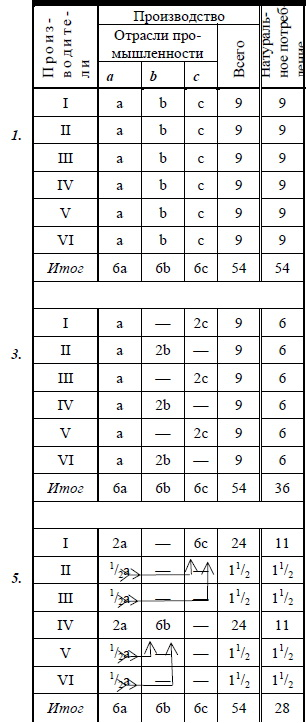

Написано осенью 1893 г.
Впервые напечатано 7 ноября 1937г. в журнале «Большевик» № 21
Печатается по рукописи
Первая страница рукописи В. И. Ленина «По поводу так называемого вопроса о рынках». — 1893 г.
Уменьшено
I
Может ли у нас в России развиваться и вполне развиться капитализм, когда масса народа бедна и беднеет все больше? Ведь для развития капитализма необходим широкий внутренний рынок, а разорение крестьянства подрывает этот рынок, грозит совершенно закрыть его и сделать невозможной организацию капиталистических порядков. Говорят, правда, что, превращая натуральное хозяйство наших непосредственных производителей в товарное, капитализм тем самым создает себе рынок, но мыслимо ли допустить, чтобы на счет жалких остатков натурального хозяйства у полунищих крестьян могло развиться у нас то могучее капиталистическое производство, какое мы видим на Западе? Не ясно ли, что, вследствие одного уже обеднения массы, наш капитализм представляет из себя нечто бессильное и беспочвенное, неспособное охватить все производство страны и сделаться основой нашего общественного хозяйства?
Таковы вопросы, выдвигаемые сплошь да рядом нашей литературой против русских марксистов; соображение об отсутствии рынка является одним из главнейших доводов против применимости теории Маркса к России. Опровержению этого довода посвящен, между прочим, реферат «Вопрос о рынках», разбором которого нам предстоит заняться.
72 В. И. ЛЕНИН
II
Основной посылкой для референта служит предположение об «общем и исключительном господстве капиталистического производства». Исходя из этой посылки, референт излагает содержание XXI главы II тома «Капитала» (Отдел 3-й — «Воспроизводство и обращение всего общественного капитала»).
Маркс ставит здесь себе задачей исследовать, каким образом общественное производство возмещает ту часть продукта, которая служит на удовлетворение личных нужд рабочих и капиталистов, и ту, которая служит для образования элементов производительного капитала. Поэтому, если в I томе, при исследовании производства и воспроизводства индивидуального капитала, можно было ограничиться анализом составных частей капитала и продукта по их стоимости — [стоимость продукта, как показано в I томе «Капитала», состоит из с (постоянного капитала) + ν (переменного капитала) + m (прибавочной стоимости)], — то здесь уже необходимо принять во внимание разделение продукта по его материальному составу, потому что та часть продукта, которая состоит из элементов капитала, не может служить для личного потребления, и наоборот. Ввиду этого Маркс делит все общественное производство — а, следовательно, и весь общественный продукт, — на два подразделения: I) производство средств производства, т. е. элементов производительного капитала, — товаров, которые могут идти только на производительное потребление, и II) производство средств потребления, т. е. товаров, идущих на личное потребление класса рабочих и класса капиталистов.
В основу исследования берется следующая схема [арабские цифры означают единицы ценности — миллионы рублей, например, а римские — указанные подразделения общественного производства. Норма прибавочной стоимости берется в 100%] :
I 4000 с +1000 ν +1000 m = 6000
II 2000 с+500 ν+500 m =3000
{Капитал = 7500 Продукт = 9000}
ПО ПОВОДУ ТАК НАЗЫВАЕМОГО ВОПРОСА О РЫНКАХ 73
Предположим сначала, что имеем дело с простым воспроизводством, т. е. допустим, что производство не расширяется, оставаясь постоянно в прежних размерах; это означает, что вся сверхстоимость18 потребляется капиталистами непроизводительно, расходуется на личные нужды, а не на накопление. При этом условии очевидно, во-первых, что II 500 ν и II 500 m должны быть потреблены капиталистами и рабочими II-го же подразделения, потому что этот продукт существует в форме средств потребления, предназначенных на удовлетворение личных нужд. Далее, I 4000 с в своей натуральной форме должны быть потреблены капиталистами I-го же подразделения, так как условие неизменности размеров производства требует сохранения к следующему году того же капитала для производства средств производства; следовательно, возмещение этой части капитала тоже не представляет никакой трудности: соответственная часть продукта, существующая в натуральной форме угля, железа, машин и т. п., будет обменена между капиталистами, занимающимися производством средств производства, и послужит для них по-прежнему постоянным капиталом. Остаются, таким образом, Ι (ν + m) и II с. I 1000 ν + I 1000 m — продукт, существующий в форме средств производства, а II 2000 с — в форме средств потребления. Рабочие и капиталисты I-го подразделения (при условии простого воспроизводства, т. е. потребления всей сверхстоимости) должны потребить средств потребления стоимостью в 2000 [1000 (ν) + 1000 (m)]. Капиталисты II-го подразделения, чтобы иметь возможность продолжать производство в прежних размерах, должны приобрести средств производства на 2000, чтобы возместить свой постоянный капитал (2000 II с). Ясно отсюда, что Ι ν + I m должны быть обменены на II с, потому что без этого невозможно производство в прежних размерах. Условием простого воспроизводства является равенство суммы переменного капитала и сверхстоимости I-го подразделения с постоянным капиталом II-го подразделения: I (v + m) = II с. Другими словами, можно формулировать этот закон так: сумма
74 В. И. ЛЕНИН
всей вновь произведенной в течение года стоимости (в обоих подразделениях) должна равняться валовой стоимости продукта, существующего в форме средств потребления: Ι (ν + m) + II (ν + m) = II (с + ν + m). В действительности, разумеется, простого воспроизводства быть не может как потому, что производство всего общества не может оставаться каждый год в прежних размерах, так и потому, что накопление является законом капиталистических порядков. Рассмотрим поэтому, каким образом происходит общественное производство в расширяющихся размерах или накопление. При накоплении только часть сверхстоимости потребляется капиталистами на личные нужды, другая же часть потребляется производительно, т. е. обращается в элементы производительного капитала для расширения производства. Поэтому при накоплении равенство между Ι (ν + m) и II с невозможно: необходимо, чтобы I (v + m) было больше II с, для того чтобы часть сверхстоимости в I подразделении (I m) не была обменена на средства потребления, а послужила для расширения производства. Итак, получаем
А. Схема простого воспроизводства:
I 4000 с + 1000 ν + 1000 m = 6000.
II 2000 с + 500 ν + 500 m = 3000.
Ι (ν + m) = II с.
Б. Исходная схема для накопления:
I 4000 с + 1000 ν + 1000 m = 6000.
II 1500 с + 750 ν + 750 m = 3000.
Ι (ν + m) > II с.
Посмотрим теперь, каким образом должно идти общественное производство при условии накопления. Первый год.
I 4000 с + 1000 ν + 1000 m = 6000.
II 1500 с + 750 ν + 750 m = 3000.
Капитал = 7250 Продукт = 9000
ПО ПОВОДУ ТАК НАЗЫВАЕМОГО ВОПРОСА О РЫНКАХ 75
I (1000 ν + 500 m) обмениваются на II 1500 с (как и при простом воспроизводстве). I 500 m накопляются, т. е. идут на расширение производства, превращаются в капитал. Если принять прежнее деление на постоянный и переменный капитал, то получим
I 500 m = 400 с + 100 ν.
Добавочный постоянный капитал (400 с) имеется в самом продукте I (его натуральная форма — средства производства); добавочный же переменный капитал (100 ν) должен быть получен от капиталистов II подразделения, которые, следовательно, тоже должны накоплять: они обменяют часть своей сверхстоимости (II 100 m) на средства производства (I 100 ν) и обратят эти средства производства в добавочный постоянный капитал. Следовательно, их постоянный капитал возрастет с 1500 с до 1600 с; для обработки его необходима добавочная рабочая сила — 50 ν, — которые берутся опять-таки из сверхстоимости капиталистов II подразделения.
Присоединяя добавочный капитал в I и во II подразделениях к первоначальному, получаем такое распределение продукта:
I 4400 с + 1100 ν + (500 т) = 6000.
II 1600 с + 800 ν + (600 т) = 3000.
Поставленная в скобки сверхстоимость означает потребительный фонд капиталистов, т. е. ту часть сверхстоимости, которая идет не на накопление, а на личные нужды капиталистов.
Если производство будет идти по-прежнему, то в конце года получим:
I 4400 с + 1100 ν + 1100 m = 6600
II 1600 с + 800 ν + 800 m = 3200
{Капитал = 7900 Продукт = 9800}
76 В. И. ЛЕНИН
I (1100 ν + 550 m) обмениваются на II 1650 с, причем добавочные 50 с берутся из 800 II m [причем увеличение с на 50 вызывает увеличение ν на 25]. Далее 550 I m накопляются по-прежнему:
550 I m = 440 с + 110 ν
165 II m= 110c + 55v.
Присоединяя теперь к первоначальному капиталу добавочный [к I 4400 с — 440 с; к I 1100 ν — 110 ν. Ко II 1600 с — 50 с и 110 с; а ко II 800 ν — 25 ν — и 55 ν], получаем:
I 4840 с + 1210 ν + (550 m) = 6600.
II 1760 с + 880 ν + (560 m) = 3200.
При дальнейшем движении производства получим
I 4840 с + 1210 ν + 1210 m = 7260
II 1760 с + 880 ν + 880 m = 3520
{Капитал = 8690 Продукт = 10 780}
и так далее.
Вот — в существеннейших чертах — результаты исследований Маркса по вопросу о воспроизводстве всего общественного капитала. Исследования эти (необходимо оговориться) переданы здесь в самом сжатом виде; опущено очень многое, подробно анализируемое Марксом, — например, денежное обращение, возмещение основного капитала, снашиваемого постепенно и т. п., — потому что все это не имеет прямого отношения к рассматриваемому вопросу.
III
Какие же выводы делает референт из этих исследований Маркса? К сожалению, он не дает вполне точной и определенной формулировки своих выводов, так что приходится самому заключать о них по некоторым
ПО ПОВОДУ ТАК НАЗЫВАЕМОГО ВОПРОСА О РЫНКАХ 77
замечаниям, не вполне гармонирующим друг с другом. Так, например, мы читаем:
«Мы видели здесь, — говорит референт, — каким образом совершается накопление в I подразделении, в производстве средств производства для средств производства: ... это накопление совершается независимо как от движения производства предметов потребления, так и от самого личного потребления, чье бы оно ни было» (лист 15/3).
Конечно, говорить о «независимости» накопления от производства предметов потребления нельзя уже потому, что для расширения производства требуется новый переменный капитал, а, следовательно, и предметы потребления; автор, вероятно, хотел этим выражением просто оттенить ту особенность схемы, что воспроизводство I с — постоянного капитала в I подразделении — происходит без обменов с II-м подразделением, т. е. каждогодно в обществе известная часть, скажем, угля производится для добычи угля же. Разумеется, это производство (угля для добычи угля) рядом последующих обменов свяжется с производством предметов потребления: — иначе бы не могли существовать ни углепромышленники, ни их рабочие.
В другом месте референт выражается уже значительно слабее: «Главное движение капиталистического накопления, — говорит он, — совершается и совершалось (за исключением весьма ранних периодов) независимо от каких-либо непосредственных производителей, независимо от личного потребления какого-либо слоя населения» (л. 8). Здесь уже указывается только на преобладание производства средств производства над производством предметов потребления в историческом развитии капитализма. Указание такое повторяется еще раз: «Если для капиталистического общества типично, с одной стороны, накопление для накопления, производительное потребление, но не личное, то, с другой стороны, для него типично именно производство средств производства для средств производства» (л. 21/2). Если автор этими указаниями хотел сказать то, что капиталистическое общество отличается
78 В. И. ЛЕНИН
от других, предшествующих ему экономических организаций, именно развитием машин и необходимых для них предметов (угля, железа и т. п.), то это совершенно верно. По высоте техники капиталистическое общество стоит выше всех других, а прогресс техники в том и выражается, что человеческий труд все более и более отступает на задний план перед трудом машин.
Вместо того, чтобы заниматься критикой недостаточно ясных заявлений референта, лучше поэтому обратиться прямо к Марксу и посмотреть, можно ли из его теории сделать вывод о «преобладании» I-го подразделения над II-ым, и в каком смысле надо понимать это преобладание.
Из вышеприведенной схемы Маркса никакого вывода о преобладании I-го подразделения над II-ым сделать нельзя: оба развиваются там параллельно. Но эта схема не принимает во внимание именно технического прогресса. Как это доказано Марксом в I томе «Капитала», технический прогресс выражается в том, что отношение переменного капитала к постоянному (ν / с) постепенно уменьшается, между тем как в схеме это отношение принято за неизменное.
Понятно уже само собою, что если внести это изменение в схему, то получится более быстрое возрастание средств производства сравнительно с предметами потребления. Тем не менее, мне кажется, не лишним будет привести этот расчет, во-первых, для наглядности, а, во-вторых, для предупреждения возможных неправильных выводов из этой посылки.
[В нижеследующей таблице норма накопления принята неизменной: половина сверхстоимости накопляется и половина потребляется лично.]
[Нижеследующую схему можно опустить и перейти прямо к выводам из нее на следующей странице. Буква д. означает добавочный капитал, идущий на расширение производства, т. е. накопляемую часть сверхстоимости.]
ПО ПОВОДУ ТАК НАЗЫВАЕМОГО ВОПРОСА О РЫНКАХ 79
1-ый год) I 4000 с + 1000 v+1000 m = 6000 ν : (с + ν) = 20,0%
II 1500 с + 750 ν +750 m = 3000 » » » 33,3%
I (1000 v +500 m) = II 1500 с
д. I 500 m = 450 с+ 50 ν » » » 1/10
д. II 60 m = 50 c+ 10 ν » » » 1/6
Ι 4450 с + 1050 ν + (500 m) = 6000
II 1550 с+ 760 ν+ (690 m) = 3000
___________________________________________________________________
2-ой год) I 4450 с + 1050 ν + 1050 m = 6550 » » » 19,2%
II 1550 с+ 760 ν+ 760 m = 3070 » » » 32,9%
I (1050 v + 525 m)=II 1575 c
II (1550 с+ 25 m)
д. II 28 m = 25 c+3 v » » » ок. 1/9
д. I 525 m = 500 с+ 25 ν » » » ок. 1/21
д. II 28 m = 25 с + 3v » » » ок. 1/9
I 4950 с + 1075 ν + (525 m) = 6550
II 1602 с + 766 v +(702 m) = 3070
_____________________________________________________________________
3-ий год) I 4950 с + 1075 v+1075 m = 7100 » » » 17,8%
II 1602 с + 766 v +766 m = 3134 » » » 32,3%
I (1075 ν + 537 1/2 m)= II 1612 1/2 с
II (1602 c + 10 ½ m)
д. II 11 1/2 m = 10 1/2 с + 1 ν » » » ок. 1/12
д. I 537 ½ m = 517 ½ c+20 v » » » ок. 1/26
д. II 22 m = 20 c + 2 v » » » 1/11
I 5467 1/2 с + 1095 v +(537 1/2 m) = 7100
II 1634 1/2 с + 769 v +(730 1/2 m) = 3134
_________________________________________________________________
4-ый год) I 5467 1/2 с + 1095 ν+1095 m = 7657 1/2 ...» » » 16,7%
II 1634 1/2 с+ 769 ν+ 769 m = 3172 1/2 » » » 32,0%
и так далее19.
80 В. И. ЛЕНИН
Сопоставим теперь выводы из этой схемы относительно возрастания различных частей общественного продукта20:
| Средства производства для средств | Средства производства для средств | Средства потребления | Весь общественный продукт | |||||
| производства | в % | потребления | в % | в % | в % | |||
| 1-ый год | 4000 | 100 | 2000 | 100 | 3000 | 100 | 9000 | 100 |
| 2-ой год | 4450 | 111,25 | 2100 | 105 | 3070 | 102 | 9620 | 107 |
| 3-ий год | 4950 | 123,75 | 2150 | 107,5 | 3134 | 104 | 10234 | 114 |
| 4-ый год | 5467 1/2 | 136,7 | 2190 | 109,5 | 3172 | 106 | 10828 1/2 | 120 |
Мы видим таким образом, что всего быстрее возрастает производство средств производства для средств производства, затем производство средств производства для средств потребления и всего медленнее производство средств потребления. К этому выводу можно бы было прийти и без исследований Маркса во II томе «Капитала» на основании того закона, что постоянный капитал имеет тенденцию возрастать быстрее переменного: положение о быстрейшем возрастании средств производства есть простая перефразировка этого закона применительно ко всему общественному производству.
Но, может быть, следует сделать еще шаг дальше? Если мы принимали, что отношение ν к с + ν постоянно уменьшается, то почему не принять, что ν становится равным нулю, что то же количество рабочих остается достаточным для большего количества средств производства? Тогда накопляемая часть сверхстоимости будет прямо присоединяться к постоянному капиталу в I подразделении, и рост общественного производства пойдет исключительно на счет средств про-
ПО ПОВОДУ ТАК НАЗЫВАЕМОГО ВОПРОСА О РЫНКАХ 81
изводства для средств производства при полном застое II-го подразделения*.
Разумеется, это было бы уже злоупотребление схемами, потому что такой вывод основан на невероятных предположениях и потому неправилен. Допустимо ли, что прогресс техники, уменьшающий отношение ν к с, выразится только в I подразделении, оставив II-ое в полном застое? Сообразно ли с законами капиталистического общества, требующего от каждого капиталиста расширения предприятия под угрозой гибели, чтобы во II-ом подразделении совершенно не происходило накопления?
Итак, единственно правильным выводом, который можно сделать из вышеизложенных исследований Маркса, будет тот, что в капиталистическом обществе производство средств производства возрастает быстрее, чем производство средств потребления. Как уже сказано, вывод этот — прямое следствие того общеизвестного положения, что капиталистическое производство создает неизмеримо более высоко развитую технику сравнительно с прежними временами**. Маркс — специально по этому вопросу — только в одном месте высказывается с полной определенностью, и это место вполне подтверждает правильность сделанной формулировки:
__________
* Я не хочу сказать, чтобы подобное явление было абсолютно невозможно, как отдельный случай. Но ведь здесь речь идет не о казусах, а об общем законе развития капиталистического общества.
В пояснение покажу на схеме, о чем идет речь:
I 4000 с + 1000 ν + 1000 m = 6000
II 1500 с + 750 ν + 750 m = 3000
I (1000 ν + 500 m) = II 1500 с
I 500 m накопляются, присоединяясь к 14000 с:
I 4500 с + 1000 ν + (500 m) = 6000
II 1500 с + 750 ν + 750 m = 3000
I 4500 с + 1000 ν + 1000 m = 6500
II 1500 с + 750 ν + 750 m = 3000
I (1000 ν + 500 m) = II 1500 с
I 500 m накопляются по-прежнему и т. д.
** Поэтому изложенный вывод можно формулировать еще несколько иначе: в капиталистическом обществе рост производства (а следовательно, и «рынка») может идти либо на счет возрастания предметов потребления, либо — и это — главным образом — на счет прогресса техники, т. е. вытеснения ручного труда машинным, — так как изменение отношения ν к с и выражает собой именно уменьшение роли ручного труда.
82 В. И. ЛЕНИН
«Отличие капиталистического общества от дикарей состоит не в том, в чем его видит Сениор, — будто привилегией и особенностью именно дикаря является такое расходование своего труда, которое не дает ему никаких продуктов, могущих превратиться в доход, т. е. в средства потребления, — а отличие состоит в том, что
а) капиталистическое общество расходует больше [Nota bene*] находящегося в его распоряжении годового рабочего времени на производство средств производства (ergo** — постоянного капитала), которые не могут сделаться доходом ни в форме заработной платы, ни в форме сверхстоимости, но могут функционировать только в качестве капитала» («Das Kapital», II Bd., Seite 436***).
IV
Спрашивается теперь, какое же отношение имеет изложенная теория к «пресловутому вопросу о рынках»? Ведь она исходит из предположения об «общем и исключительном господстве капиталистического способа производства», а «вопрос» в том и состоит, «возможно ли» в России полное развитие капитализма. Правда, эта теория вносит поправку в обычное представление о развитии капитализма, но очевидно, что уяснение того, как развивается капитализм вообще, нимало еще не подвигает вперед вопроса о «возможности» (и необходимости) развития капитализма в России.
Референт, однако, не ограничивается изложением теории Маркса о ходе всего общественного производства, организованного капиталистически. Он указывает на необходимость отличать «два существенно различных момента в накоплении капитала: 1) развитие капиталистического производства вширь, когда оно захватывает уже готовые сферы труда, вытесняя собой нату-
________
* — Заметьте. Ред.
** — следовательно. Ред.
*** — «Капитал», т. II, стр. 436.21 Ред.
ПО ПОВОДУ ТАК НАЗЫВАЕМОГО ВОПРОСА О РЫНКАХ 83
ральное хозяйство, и расширяется на счет последнего; и 2) развитие капиталистического производства, если можно так выразиться, вглубь, когда расширение его происходит независимо от натурального хозяйства, т. е. при общем и исключительном господстве капиталистического способа производства». Не вдаваясь пока в критику этого разделения, перейдем прямо к рассмотрению того, что разумеет автор под развитием капитализма вширь: выяснение этого процесса, состоящего в замене натурального хозяйства капиталистическим, должно показать нам, каким образом русский капитализм «охватит всю страну».
Референт иллюстрирует развитие капитализма вширь следующей схемой:
А — капиталисты; W— непосредственные производители.
a, a1 а11 — капиталистические предприятия. Стрелки указывают на движение обмениваемых товаров.
с, ν, m — составные части стоимости товаров.
I, II — натуральная форма товаров: I — средства производства;
II — средства потребления.
«Существенное отличие мест А и W, — говорит референт, — состоит в том, что в А — производители — капиталисты, которые потребляют свою сверхстоимость производительно, а в W — непосредственные
84 В. И. ЛЕНИН
производители, которые свою сверхстоимость (я разумею здесь излишек ценности продукта над стоимостью средств производства и необходимых средств пропитания) потребляют непроизводительно.
Последуем по схеме за стрелками и легко увидим, как развивается капиталистическое производство в А на счет потребления в W, захватывая его постепенно». Продукт капиталистического предприятия а отправляется «непосредственным производителям» в форме предметов потребления; в обмен на него «непосредственные производители» возвращают постоянный капитал (с) в форме средств производства и переменный капитал (ν) в форме средств потребления, а сверхстоимость (m) в форме элементов дополнительного производительного капитала: с1 + v1. Этот капитал служит для основания нового капиталистического предприятия a1 которое точно так же посылает свой продукт в форме предметов потребления «непосредственным производителям» и так далее. «Из приведенной схемы развития капитализма вширь следует, что все производство находится в теснейшей зависимости от потребления на «внешних» рынках, потребления масс (причем с общей точки зрения решительно все равно, где находятся эти массы, — под боком ли у капиталистов или где-нибудь за океаном). Очевидно, что расширение производства в А, т. е. развитие капитализма в этом направлении, окончится, как только все непосредственные производители в W обратятся в товаропроизводителей, ибо, как мы видели выше, каждое новое предприятие (или расширение старого) рассчитано на новый круг потребителей W. Ходячее представление, — говорит в заключение референт, — о капиталистическом накоплении, т. е. о капиталистическом воспроизводстве в расширенных размерах, только подобным взглядом на вещи и ограничивается, не подозревая о развитии капиталистического производства вглубь, независимо от каких бы то ни было стран с непосредственными производителями, т. е. независимо от так называемых внешних рынков».
ПО ПОВОДУ ТАК НАЗЫВАЕМОГО ВОПРОСА О РЫНКАХ 85
Из всего изложенного можно согласиться только с тем, что представление это о развитии капитализма вширь и иллюстрирующая его схема находится в полнейшем соответствии с ходячими, народническими воззрениями на предмет.
В самом деле, трудно рельефнее и нагляднее изобразить всю нелепость и бессодержательность ходячих воззрений, чем это сделано в приведенной схеме.
«Ходячее представление» всегда смотрело на наш капитализм как на нечто оторванное от «народного строя», стоящее в стороне от него, — точь-в-точь так, как это изображено в схеме: из нее совершенно не видно, в чем состоит связь двух «мест», капиталистического и народного. Почему товары, отправляемые из А, находят себе сбыт в W? чем вызывается превращение натурального хозяйства в W в товарное? Ходячее воззрение никогда не давало ответа на эти вопросы, смотря на обмен как на какую-то случайность, а не как на известную систему хозяйства.
Далее, ходячее воззрение никогда не давало объяснения тому, откуда и каким образом возник наш капитализм — точно так же, как не объясняет этого и схема: дело представляется так, как будто капиталисты извне откуда-то пришли, а не из среды тех же «непосредственных производителей». Остается непонятным, откуда добывают себе капиталисты «свободных рабочих», необходимых для предприятий a, a1 и т. д. Всякий знает, что в действительности рабочие эти берутся именно из «непосредственных производителей», но из схемы нимало не видно, чтобы товарное производство, охватывая «место» W, создавало там контингент свободных рабочих.
Одним словом, схема эта — точь-в-точь как и ходячее воззрение — ровно ничего не объясняет в явлениях наших капиталистических порядков и потому никуда не годится. Та цель, ради которой она составлена, — пояснение того, как капитализм развивается на счет натурального хозяйства, охватывая всю страну, — совершенно ею не достигается, потому что, как это видит и сам референт, — «если последовательно
86 В. И. ЛЕНИН
держаться разбираемого воззрения, то необходимо заключить, что до повсеместного развития капиталистического способа производства дело дойти никак не может».
Остается только удивляться после этого, что автор, хотя бы и отчасти, примыкает сам к этому воззрению, говоря, что «капитализм действительно (?) развивался в периоды своего младенчества таким легчайшим (sic!?*) способом (легчайшим потому, что здесь захватываются готовые отрасли труда), отчасти он развивается в этом направлении и теперь (??), поскольку на земном шаре еще имеются остатки натурального хозяйства и поскольку увеличивается население».
На самом деле, это — не «легчайший» способ развития капитализма, а просто-напросто — «легчайший способ понимания» процесса, настолько «легчайший», что вернее назвать его полным непониманием. Российские народники всяческих оттенков и по сю пору пробавляются этими «легчайшими» приемами: не помышляя никогда о том, чтобы объяснить, каким образом возник наш капитализм и каким образом он функционирует, они ограничиваются сопоставлением «больного места» наших порядков, капитализма, с «здоровым» — непосредственными производителями, «народом»; первое ставится ошую, второе — одесную, и все глубокомыслие завершается сентиментальными фразами о том, что «вредно» и что «полезно» для «человеческого общежития».
V
Чтобы исправить вышеприведенную схему, необходимо начать с выяснения содержания тех понятий, о которых идет речь. Под товарным производством разумеется такая организация общественного хозяйства, когда продукты производятся отдельными, обособлен-
__________
*— так!? Ред.
ПО ПОВОДУ ТАК НАЗЫВАЕМОГО ВОПРОСА О РЫНКАХ 87
ными производителями, причем каждый специализируется на выработке одного какого-либо продукта, так что для удовлетворения общественных потребностей необходима купля-продажа продуктов (становящихся в силу этого товарами) на рынке. Под капитализмом разумеется та стадия развития товарного производства, когда товаром становятся уже не только продукты человеческого труда, но и самая рабочая сила человека. Таким образом, в историческом развитии капитализма важны два момента: 1) превращение натурального хозяйства непосредственных производителей в товарное и 2) превращение товарного хозяйства в капиталистическое. Первое превращение совершается в силу того, что появляется общественное разделение труда — специализация обособленных [NB: это — непременное условие товарного хозяйства], отдельных производителей по занятию одной только отраслью промышленности. Второе превращение совершается в силу того, что отдельные производители, производя каждый особняком товары на рынок, становятся в отношение конкуренции: каждый стремится дороже продать, дешевле купить, и необходимым результатом является усиление сильного и падение слабого, обогащение меньшинства и разорение массы, ведущее к превращению самостоятельных производителей в наемных рабочих и многих мелких заведений в немногие крупные. Таким образом, схема должна быть составлена так, чтобы показать оба эти момента в развитии капитализма и те изменения, которые производит это развитие в величине рынка, т. е. в количестве продуктов, превращающихся в товары.
Нижеследующая схема и составлена по этому плану: абстрагированы все посторонние обстоятельства, т. е. приняты за неизменные (например, количество населения, производительность труда и многое другое), чтобы проанализировать влияние на рынок одних только указанных моментов развития капитализма.
88 В. И. ЛЕНИН

Пояснения к схеме:
I — II... — VI — производители.
а, б, с — отрасли промышленности (например, земледелие, промышленность добывающая и обрабатывающая).
а = b = с = 3. Величина стоимости продуктов a = b = с равна 3 (трем единицам стоимости),
из которых 1 приходится на сверхстоимость*.
В графе «рынок» означается величина стоимости продаваемых (и покупаемых) продуктов;
в скобках поставлена величина стоимости продаваемой (и покупаемой) рабочей силы (= р. с).
Стрелки, идущие от одного производителя к другому, означают, что 1-ый состоит
наемным рабочим у второго.
Предполагается простое воспроизводство: вся сверхстоимость потребляется капиталистами непроизводительно.
_________
* Та часть стоимости, которая возмещает постоянный капитал, принята за неизменную и поэтому откинута.
ПО ПОВОДУ ТАК НАЗЫВАЕМОГО ВОПРОСА О РЫНКАХ 89
90 В. И. ЛЕНИН
Разберем теперь эту схему, показывающую последовательные изменения в системе хозяйства общины, состоящей из 6-ти производителей. В схеме приведены 6 периодов, выражающих стадии превращения натурального хозяйства в капиталистическое.
1-ый период. Имеем 6 производителей, из которых каждый расходует свой труд во всех 3-х отраслях промышленности (в а, в b и в с). Получаемый продукт (9 у каждого производителя: а + b + с = 9) тратится на себя в своем же хозяйстве. Поэтому мы имеем чистый вид натурального хозяйства; на рынок продукты не поступают совершенно.
Период 2-ой. Производитель I-ый изменяет производительность своего труда: он оставляет промышленность b и тратит время, прежде употреблявшееся на эту отрасль промышленности, на промышленность с. В силу такой специализации одного производителя, остальные сокращают производство с, так как I-ым хозяином произведен излишек против собственного потребления, и усиливают производство b, чтобы произвести продукт для I-го производителя. Появившееся разделение труда неизбежно ведет к товарному производству: 1-ый производитель продает 1 с и покупает 1 b, остальные производители продают 1 b (каждый из 5 по 1/5 b) и покупают 1 с (каждый по 1/5 с); на рынок поступает количество продукта стоимостью в 6. Величина рынка в точности соответствует степени специализации общественного труда: специализировалось производство одного с (1 с = 3), и одного b (1 b = 3), т. е. одной девятой части всего общественного производства [18 с (= а = b)], и на рынок поступила 1/9 всего общественного продукта.
Период 3-ий. Разделение труда подвигается дальше, вполне охватывая отрасли промышленности b и с: трое производителей занимаются только промышленностью b, трое — только промышленностью с. Каждый продает 1 с (или 1 b), т. е. 3 единицы стоимости, и покупает тоже 3—1 b (или 1 с). Это усиление разделения труда ведет к возрастанию рынка, на который поступает теперь уже 18 единиц стоимости. Величина рынка опять-таки в
ПО ПОВОДУ ТАК НАЗЫВАЕМОГО ВОПРОСА О РЫНКАХ 91
точности соответствует степени специализации (= разделения) общественного труда: специализировалось производство 3 b и 3 с, т. е. 1/3 общественного производства, и на рынок поступает 1/3 общественного продукта.
Период 4-ый изображает уже капиталистическое производство: процесс преобразования товарного производства в капиталистическое не вошел в схему и потому должен быть отдельно описан.
В предыдущем периоде каждый производитель являлся уже товаропроизводителем (в областях промышленности b и c, о которых только и идет речь): каждый производил отдельно, особняком, независимо от других производителей, производил на рынок, величина которого не была, разумеется, известна ни одному из них. Это отношение обособленных производителей, работающих на общий рынок, называется конкуренцией. Понятно само собою, что равновесие между производством и потреблением (предложением и спросом), при этих условиях, достигается только рядом колебаний. Более искусный, предприимчивый, сильный производитель усилится еще более вследствие этих колебаний, — слабый и неискусный будет раздавлен ими. Обогащение немногих личностей и обнищание массы — таковы неизбежные следствия закона конкуренции. Дело кончается тем, что разорившиеся производители теряют хозяйственную самостоятельность и поступают наемными рабочими в расширенное заведение своего счастливого соперника. Именно это положение и изображено в схеме. Отрасли промышленности b и с, распределенные раньше между всеми 6 производителями, теперь концентрировались в руках 2-х производителей (I-го и IV-ro). Остальные производители работают у них по найму, получая уже не весь продукт своего труда, а без сверхстоимости, присваиваемой хозяином [напомню, что сверхстоимость, по предположению, равна 1/3 продукта, так что производящий 2 b (= 6) получит от хозяина 2/3 — т. е. 4]. В результате получаем усиление разделения труда — и возрастание
92 В. И. ЛЕНИН
рынка, на который поступает уже 22, несмотря на то, что «масса» «обеднела»: — производители, сделавшиеся (отчасти) наемными рабочими, получают всего продукта уже не по 9, а только по 7, — 3 получает он от самостоятельного хозяйства (земледельческого — промышленность а) и 4 от наемного труда (от производства 2 b или 2 с). Эти производители, являющиеся уже более наемными рабочими, чем самостоятельными хозяевами, потеряли возможность нести на рынок какой бы то ни было продукт своего труда, потому что разорение отняло у них средства производства, необходимые для выработки продукта. Им пришлось прибегать к «заработкам», т. е. нести на рынок свою рабочую силу и на полученные от продажи этого нового товара деньги покупать необходимый для себя продукт.
Из схемы видно, что производители II и III, V и VI продают каждый рабочей силы на 4 единицы стоимости и покупают на ту же сумму предметов потребления. Что касается до производителей — капиталистов, I-го и IV-го, то каждый из них производит продукта на 21 ; из этого он сам потребляет 10 [3 (= а) + 3 (= с или b) + 4 (сверхстоимость от 2 с или 2 b)] и продает 11; покупает же он товаров на 3 (с или b) + 8 (рабочая сила).
В этом случае, необходимо заметить, мы не получаем абсолютного соответствия между степенью специализации общественного труда (специализировалось производство 5 b и 5 с, т. е. на сумму 30) и величиной рынка (22), — но эта неправильность схемы зависит от принятия простого воспроизводства*, т. е. отсутствия накопления, почему и оказалось, что сверхстоимость, отбираемая у рабочих (по 4 — каждым капиталистом), потребляется вся натурой. Так как отсутствие накопления невозможно в капиталистическом обществе, то ниже будет сделана соответствующая поправка.
________
* Это относится равным образом и к 5-му и к 6-му периодам.
ПО ПОВОДУ ТАК НАЗЫВАЕМОГО ВОПРОСА О РЫНКАХ 93
Период 5-ый. Разложение товаропроизводителей распространилось и на земледельческую промышленность (а): наемные рабочие не могли продолжать хозяйства, работая главным образом в чужих промышленных заведениях, и разорились: у них остались только жалкие остатки земледельческого хозяйства, в размере 1/2 прежнего количества (которое, по нашему предположению, было как раз достаточно на покрытие нужд семьи) — точно так же, как теперешние посевы громадной массы наших крестьян — «земледельцев» представляют из себя только жалкие крохи самостоятельного земледельческого хозяйства. Промышленность а начала точно так же концентрироваться в незначительное число крупных заведений. Так как наемные рабочие теперь не в состоянии уже обойтись своим хлебом, то заработная плата, понижавшаяся самостоятельным земледельческим хозяйством рабочих, повышается, давая рабочему денежные средства на покупку хлеба (хотя и в меньшем количестве, чем потреблял он, будучи сам хозяином): теперь рабочий сам производит 1 1/2 (= 1/2 а) и прикупает 1, получая всего 2 1/2, вместо прежних 3 (=а). Хозяева — капиталисты, присоединившие к своим промышленным заведениям расширенное земледельческое хозяйство, производят теперь по 2 а (=6), из которых 2 переходит рабочим в виде заработной платы, а 1 (1/3 а) — сверхстоимость — достается им. Развитие капитализма, изображаемое этой схемой, сопровождается «обеднением» «народа» (рабочие потребляют всего уже только по 6 1/2, a не по 7, как в 4 периоде) и возрастанием рынка, на который поступает уже 26. «Упадок земледельческого хозяйства» у большинства производителей вызвал не сокращение, а увеличение рынка земледельческих продуктов.
Период 6-ой. Завершение специализации занятий, т. е. разделения общественного труда. Все отрасли промышленности отделились и стали специальностью отдельных производителей. Наемные рабочие совершенно потеряли самостоятельное хозяйство и существуют уже исключительно наемным трудом. Результат опять тот же: развитие капитализма [самостоятельное
94 В. И. ЛЕНИН
хозяйство на себя вытеснено окончательно], «обеднение массы» [хотя заработная плата и возросла, но потребление понизилось у рабочих с 6 1/2 до 6: они производят по 9 (3а, 3b, 3с) и отдают 1/3 хозяину, как сверхстоимость] и дальнейший рост рынка, на который поступает теперь уже 2/3 общественного продукта (36).
VI
Подведем теперь выводы, вытекающие из приведенной схемы.
Первый вывод состоит в том, что понятие «рынка» совершенно неотделимо от понятия общественного разделения труда, — этого, как Маркс говорит, «общего основания всякого товарного [а следовательно, — добавим от себя — и капиталистического] производства». «Рынок» является там и постольку, где и поскольку появляется общественное разделение труда и товарное производство. Величина рынка неразрывно связана с степенью специализации общественного труда.
«Товар приобретает всеобщую, общественно-признанную эквивалентную форму только в качестве денег, а деньги находятся в чужом кармане. Чтобы извлечь их оттуда, товар должен быть прежде всего потребительной стоимостью для владельца денег, и, следовательно, труд, потраченный на производство этого товара, должен быть израсходован в общественно-полезной форме, другими словами, должен явиться членом общественного разделения труда. Но разделение труда представляет из себя естественно выросший производственный организм, ткани которого сплетались и продолжают сплетаться за спиной товаропроизводителей. Возможно, что товар является продуктом нового вида труда, предназначенного удовлетворять вновь возникшую потребность или своим появлением впервые создать новую потребность. Какое-нибудь особое действие в процессе труда, — вчера еще бывшее одной из многих функций одного и того же товаропроизводителя, — сегодня, может быть, отрывается от этого процесса, становится самостоя-
ПО ПОВОДУ ТАК НАЗЫВАЕМОГО ВОПРОСА О РЫНКАХ 95
тельным и, именно в силу этого, посылает свой частичный продукт в качестве самостоятельного товара на рынок» («Das Kapital», I Bd., S. 85*. Курсив мой).
Таким образом, пределы развитию рынка, при существовании капиталистического общества, ставятся пределами специализации общественного труда. А специализация эта, по самому существу своему, бесконечна — точно так же, как и развитие техники. Для того, чтобы повысилась производительность человеческого труда, направленного, например, на изготовление какой-нибудь частички всего продукта, необходимо, чтобы производство этой частички специализировалось, стало особым производством, имеющим дело с массовым продуктом и потому допускающим (и вызывающим) применение машин и т. п. Это с одной стороны. А с другой стороны, прогресс техники в капиталистическом обществе состоит в обобществлении труда, а это обобществление необходимо требует специализации различных функций процесса производства, превращения их из раздробленных, единичных, повторяющихся особо в каждом заведении, занятом этим производством, — в обобществленные, сосредоточившиеся в одном, новом заведении и рассчитанные на удовлетворение потребностей всего общества. Приведу пример.
«За последнее время в Северо-Американских Штатах деревообрабатывающие заводы все более и более специализируются, «возникают заводы для выделки, например, исключительно топорищ, или метельных ручек, или раздвижных столов... Машинное дело безостановочно подвигается вперед, постоянно изобретаются новые машины, упрощающие и удешевляющие известную сторону производства... Каждая отрасль, например, мебельного дела обратилась в специальность, требует особых машин и особых рабочих... В экипажном деле колесные ободья производятся на особых заводах (Миссури, Арканзас, Тенесси), колесные спицы в Индиане и Огайо, ступицы опять-таки на специальных заводах Кентукки и Иллинойса. Все эти отдельные
_______
* — «Капитал», т. I, стр. 85.22 Ред.
96 В. И. ЛЕНИН
части покупаются особыми заводами, которых специальность — целые колеса. Таким образом целый десяток заводов участвует в изготовлении какого-нибудь дешевого экипажа» (г. Тверской: «Десять лет в Америке». «Вестник Европы», 1893, 1. — Цитирую по Ник. — ону, стр. 91, прим. 1).
Отсюда видно, до какой степени неправильным является утверждение, будто рост рынка в капиталистическом обществе, вызываемый специализацией общественного труда, должен окончиться, как только все натуральные производители превратятся в товаропроизводителей. Русское экипажное производство давно уже превратилось в товарное, но какие-нибудь колесные ободья производятся все еще в каждом экипажном (или колесном) заведении отдельно; техника низка, производство раздроблено между массой производителей. Прогресс техники должен повести за собой специализацию различных частей производства, обобществление их и, следовательно, увеличение рынка.
Здесь следует оговориться. Все изложенное нимало не ведет к отрицанию того положения, что капиталистическая нация не может существовать без внешних рынков. При капиталистическом производстве равновесие производства с потреблением достигается только рядом колебаний; чем крупнее производство, чем более широк круг потребителей, на которых оно рассчитано, тем сильнее эти колебания. Понятно поэтому, что когда буржуазное производство достигло высокой степени развития, ему уже невозможно удержаться в рамках национального государства: конкуренция вынуждает капиталистов все расширять производство и отыскивать себе внешних рынков для массового сбыта продукта. Очевидно, что необходимость внешних рынков для капиталистической нации так же мало нарушает тот закон, что рынок есть простое выражение общественного разделения труда при товарном хозяйстве и что, следовательно, он может расти так же бесконечно, как и разделение труда, — как мало кризисы нарушают закон стоимости. Печалования о рынках появились
ПО ПОВОДУ ТАК НАЗЫВАЕМОГО ВОПРОСА О РЫНКАХ 97
в русской литературе только тогда, когда капиталистическое производство наше в известных своих отраслях (например, хлопчатобумажная промышленность) достигло полного развития, охватило почти весь внутренний рынок, сложилось в немногие громадные предприятия. Что материальным основанием толков и «вопросов» о рынках являются именно интересы нашей крупной капиталистической промышленности, — лучшим доказательством этому служит тот факт, что никто еще в нашей литературе не пророчил гибели нашей кустарной промышленности вследствие исчезновения «рынков», хотя кустарная промышленность производит ценностей более чем на миллиард рублей и работает на тот же самый обнищавший «народ». Вопли о гибели нашей промышленности по недостатку рынков — не что иное, как сшитый белыми нитками маневр наших капиталистов, которые таким образом производят давление на политику, отождествляют (в скромном сознании своего «бессилия») интересы своего кармана с интересами «страны» и оказываются способными толкнуть правительство на путь завоевательной колониальной политики, вовлечь даже его в войну, ради охранения таких «государственных» интересов. Нужна именно вся бездонная пропасть народнического утопизма и народнической наивности, чтобы принимать вопли о рынках — эти крокодиловы слезы вполне окрепшей и успевшей уже зазнаться буржуазии — за доказательство «бессилия» нашего капитализма!
Второй вывод состоит в том, что «обеднение массы народа» (этот непременный член всех народнических рассуждений о рынке) не только не препятствует развитию капитализма, а напротив, именно выражает собой его развитие, является условием капитализма и усиливает его. Для капитализма нужен «свободный рабочий», и обеднение в том и состоит, что мелкие производители превращаются в наемных рабочих. Это обеднение массы сопровождается обогащением немногих эксплуататоров, разорение и упадок мелких заведений сопровождается усилением и развитием более
98 В. И. ЛЕНИН
крупных; оба процесса содействуют возрастанию рынка: «обедневший» крестьянин, существовавший прежде своим хозяйством, теперь живет «заработками», т. е. продажей своей рабочей силы; ему приходится теперь покупать себе необходимые предметы потребления (хотя бы и в меньшем количестве и худшего качества); с другой стороны, те средства производства, от которых освобождается этот крестьянин, концентрируются в руках меньшинства, превращаются в капитал, и произведенный продукт поступает уже на рынок. Только этим и объясняется то явление, что массовая экспроприация нашего крестьянства в пореформенную эпоху сопровождалась не уменьшением, а увеличением валовой производительности страны* и возрастанием внутреннего рынка: общеизвестен факт, что громадно увеличилось производство крупных фабрик и заводов, что значительно распространились кустарные промыслы — и те и другие работают главным образом на внутренний рынок, — равным образом увеличилось и количество хлеба, обращавшегося на внутренних рынках (развитие хлебной торговли внутри страны).
_______
* Спорным может показаться это только разве по отношению к земледельческой промышленности. «Хлебное производство находится в абсолютном застое», — говорит, например, г. Н. —он. Он делает этот вывод, основываясь на данных только за 8 лет (1871—1878 гг.). Посмотрим на данные о более продолжительном периоде: 8-летний, разумеется, слишком мал. Сравним данные за 60-е годы. [«Военно-стат. сборник», 1871], 70-е [данные Н. —она] и 80-е [«Сборник сведений о России», 1890]. Данные относятся к 50 губерниям Европейской России и обнимают все хлеба, включая картофель.
| Средние годовые за | Посеяно тысяч четвертей | Собрано (за выч. семян) | Урожай сам | Население (тысячи) |
| 1864—1866 гг. (3) | 71696 100 | 151840 100 | 3,12 | 61421 100 (1867 г.) |
| 1871—1878 гг. (8) | 71378 99,5 | 195024 128,4 | 3,73 | 76594 124,7 (1876 г.) |
| 1883—1887 гг. (5) | 80293 111,9 | 254914 167,8 | 4,17 | 85395 139,0 (1886 г.) |
ПО ПОВОДУ ТАК НАЗЫВАЕМОГО ВОПРОСА О РЫНКАХ 99
Третий вывод — о значении производства средств производства — требует внесения поправки в схему. Как уже было замечено, схема эта отнюдь не претендует на изображение всего процесса развития капитализма, но только на изображение того, как отражается на рынке смена натурального хозяйства товарным и этого последнего капиталистическим. Поэтому там и было абстрагировано накопление. Между тем в действительности капиталистическое общество не может существовать, не накопляя, так как конкуренция вынуждает каждого капиталиста, под угрозой разорения, расширять производство. Такое расширение производства было изображено и в схеме: 1-й производитель, например, в течение промежутка между 3-им и 4-ым периодами расширил свое производство с втрое: с 2 с до 6 с; прежде он один работал в заведении, — теперь с двумя наемными рабочими. Ясно, что это расширение производства не могло произойти без накопления: требовалась постройка особой мастерской на нескольких человек, приобретение орудий производства в большем размере, закупка сырья в большем количестве и мн. др. То же самое применимо и к IV-му производителю, расширившему производство b. Это расширение отдельных заведений, концентрация производства необходимо должна была вызвать (или усилить — это все равно) производство средств производства для капиталистов: машин, железа, угля и т. п. Концентрация производства повысила производительность труда, заменила ручной труд машинным и выбросила вон известное число рабочих. С другой стороны, развивалось и производство этих машин и других средств производства, обращаемых капиталистами в постоянный капитал, начинающий теперь возрастать быстрее переменного. Если бы сравнить, например, период 4-ый с 6-ым, то получилось бы возрастание производства средств производства в 1 1/2 раза (так как в 1-ом случае — 2 капиталистических предприятия, требующих увеличения постоянного капитала, а в последнем — 3): сравнивая это возрастание с ростом производства предметов потребления, мы получили бы то самое быстрейшее возрастание
100 В. И. ЛЕНИН
производства средств производства, о котором говорено было выше.
Весь смысл и все значение этого закона о быстрейшем возрастании средств производства в том только и состоит, что замена ручного труда машинным, — вообще прогресс техники при машинной индустрии, — требует усиленного развития производств по добыче угля и железа, этих настоящих «средств производства для средств производства». Что референт не понял смысла этого закона и за схемами, изображающими процесс, просмотрел действительное содержание процесса, это ясно видно из такого его заявления: «На сторонний взгляд такое производство средств производства для средств производства кажется совершенно нелепым, но ведь и [sic!] плюшкинское собирание денег для денег было процессом тоже (?! !) совершенно нелепым. Ни те, ни тот не ведают бо, что творят». Народники именно и усиливаются доказать это самое — нелепость русского капитализма, разоряющего, дескать, народ, но не дающего высшей организации производства. Разумеется, это сказки. В замене ручного труда машинным нет ничего «нелепого»: напротив, в этом и состоит вся прогрессивная работа человеческой техники. Чем выше развивается техника, тем более вытесняется ручной труд человека, заменяясь рядом все более и более сложных машин: в общем производстве страны все большее место занимают машины и необходимые для их выделки предметы*.
Эти три вывода необходимо дополнить еще двумя замечаниями.
Во-первых, изложенное нимало не отрицает того «противоречия в капиталистическом способе производства», о котором Маркс говорит в следующих словах:
________
* Понятно поэтому, что разделять развитие капитализма на развитие вширь и — вглубь неправильно: все развитие идет одинаково на счет разделения труда; «существенной» разницы между этими моментами нет. Действительно же существующее между ними различие сводится к разным стадиям прогресса техники. Низшие стадии развития капиталистической техники — простая кооперация и мануфактура — не знают еще производства средств производства для средств производства: оно возникает и достигает громадного развития только при высшей стадии — крупной машинной индустрии.
ПО ПОВОДУ ТАК НАЗЫВАЕМОГО ВОПРОСА О РЫНКАХ 101
«Рабочие в качестве покупщиков товара важны для рынка. Но капиталистическое общество имеет тенденцию ограничивать плату им, как продавцам своего товара — рабочей силы — минимумом цены» («Kapital», Bd. II, S. 303, № 32*). Выше было уже указано, что в капиталистическом обществе не может не возрастать и та часть общественного производства, которая производит предметы потребления. Развитие производства средств производства только отодвигает указанное противоречие, но не уничтожает его. Оно может быть устранено только с устранением самого капиталистического способа производства. Само собою разумеется, однако, что видеть в этом противоречии препятствие к полному развитию капитализма в России (как это любят делать народники) — совсем уже нелепо; — впрочем, это достаточно уже разъяснено схемой.
Во-вторых, при обсуждении соотношения между ростом капитализма и «рынка» невозможно опускать из виду той несомненной истины, что развитие капитализма неизбежно влечет за собой возрастание уровня потребностей всего населения и рабочего пролетариата. Это возрастание создается вообще учащением обменов продуктами, приводящим к более частым столкновениям между жителями города и деревни, различных географических местностей и т. п. К этому же приводит и сплоченность, скученность рабочего пролетариата, повышающая его сознательность и чувство человеческого достоинства и дающая ему возможность успешной борьбы против хищнических тенденций капиталистических порядков. Этот закон возвышения потребностей с полной силой сказался в истории Европы — сравнить, например, французского пролетария конца XVIII и конца XIX в. или английского рабочего 1840-х годов** и современного. Этот же закон проявляет
________
* — «Капитал», т. II, стр. 303, прим. 32.23 Ред.
** Ср. Fr. Engels (Фр. Энгельс. Ред.). «Положение рабочего класса в Англии в 1844 г.». Это — состояние самой ужасной и грязной нищеты (в буквальном значении слова) и полного упадка чувства человеческого достоинства.
102 В. И. ЛЕНИН
свое действие и в России: быстрое развитие товарного хозяйства и капитализма в пореформенную эпоху вызвало и повышение уровня потребностей «крестьянства»: крестьяне стали жить «чище» (в отношении одежды, жилища и т. п.). Что это, несомненно прогрессивное, явление должно быть поставлено в кредит именно русскому капитализму и ничему иному, — это доказывается хотя бы уже тем общеизвестным фактом (отмечаемым всеми исследователями наших кустарных промыслов и крестьянского хозяйства вообще), что крестьяне промышленных местностей живут гораздо «чище» крестьян, занимающихся одним земледелием и незатронутых почти капитализмом. Разумеется, это явление сказывается прежде всего и легче всего в перенимании чисто внешней, показной стороны «цивилизации», но только отъявленные реакционеры, вроде г. В. В., способны оплакивать это явление и не видеть в нем ничего, кроме «упадка».
VII
Чтобы понять, в чем собственно состоит «вопрос о рынках», лучше всего сравнить народническое и марксистское представление о процессе, иллюстрируемое схемами 1-ой (об обмене между капиталистами места А и непосредственными производителями места W) и 2-ой (о превращении натурального хозяйства 6-ти производителей в капиталистическое).
Примем 1-ую схему — и мы ничего не сумеем объяснить себе. Почему развивается капитализм? откуда берется он? Он представляется какой-то «случайностью», возникновение его приписывается либо тому, что «мы шли не по тому пути».., либо «насаждению» начальства. Почему «беднеет масса»? на это опять не дает ответа схема, и народники, вместо ответа, отделываются сентиментальными фразами об «освященном веками строе», об уклонении с правильного пути и т. п. пустяками, на которые так изобретателен знаменитый «субъективный метод в социологии».
ПО ПОВОДУ ТАК НАЗЫВАЕМОГО ВОПРОСА О РЫНКАХ 103
Неумение объяснить капитализм и предпочтение утопий изучению и выяснению действительности ведет к тому, что отрицается значение и сила капитализма. Это — точно какой-то безнадежно больной, которому неоткуда почерпнуть сил для развития. И мы внесем в положение этого больного ничтожное, почти неощутимое улучшение, если скажем, что он может развиваться на счет производства «средств производства для средств производства». Ведь для этого нужно развитие техники капитализма*, а «мы видим», что именно этого-то развития и нет. Для этого нужно, чтобы капитализм охватил всю страну, а мы видим, что «до повсеместного развития капитализма дело дойти никак не может».
Наоборот, если мы примем 2-ую схему, нам уже ни развитие капитализма, ни обеднение народа не покажется случайностью. Это — необходимые спутники роста товарного хозяйства, основанного на разделении общественного труда. Вопрос о рынке устраняется совершенно, потому что рынок есть не что иное, как выражение этого разделения труда и товарного производства. Развитие капитализма представляется уже не только возможным [что в лучшем случае** мог бы доказать референт], но и необходимым, потому что прогресс техники, раз уже общественное хозяйство основано на разделении труда и товарной форме продукта, не может не вести к усилению и углублению капитализма.
Спрашивается теперь, почему же следует принять именно второе воззрение? в чем критерий его правильности?
В фактах современной русской экономической действительности.
Центром тяжести в 2-ой схеме является переход от товарного хозяйства к капиталистическому, разложение
_________
* То есть смена мелких промышленных единиц крупными, вытеснение ручного труда машинным.
** То есть в том случае, если бы он правильно оценил и верно понял значение производства средств производства.
104 В. И. ЛЕНИН
товаропроизводителей на капиталистов и пролетариат. И если мы обратимся к явлениям современного общественного хозяйства России, то увидим, что главное место занимает именно разложение наших мелких производителей. Возьмем ли мы крестьян-земледельцев — окажется, что, с одной стороны, крестьяне массами забрасывают землю, теряют хозяйственную самостоятельность, обращаются в пролетариев, с другой стороны, крестьяне расширяют постоянно запашки и переходят к улучшенной культуре. С одной стороны, крестьяне теряют земледельческий инвентарь (живой и мертвый), — с другой стороны, крестьяне заводят улучшенный инвентарь, начинают приобретать машины и т. п. [Ср. В. В. «Прогрессивные течения в крестьянском хозяйстве».] С одной стороны, крестьяне бросают землю, продают наделы, сдают их в аренду, — с другой стороны, крестьяне же арендуют наделы и с жадностью покупают частновладельческие земли. Все это — общеизвестные, давным-давно установленные факты*, единственное объяснение которых заключается в законах товарного хозяйства, разлагающего и наше «общинное» крестьянство на буржуазию и пролетариат. Возьмем мы кустарей, — окажется, что в пореформенную эпоху не только возникали новые промыслы и развивались быстрее старые [это явление — результат только что указанного разложения земледельческого крестьянства, результат прогрессирующего общественного разделения труда**], но кроме того, масса кустарей все более и более беднела, впадала в нищету и теряла хозяйственную самостоятельность, тогда как незначительное меньшинство обогащалось на счет этой массы, скапливало огромные капиталы, превращалось в скупщиков, забиравших в свои руки сбыт и организовавших в конце концов, в громадном большинстве наших кустарных
______
* Сами крестьяне очень метко назвали этот процесс «раскрестьяниванием». [См. «Сельскохозяйственный обзор Нижегородской губ. за 1892 год». Н.-Н., 1893. Вып. III, стр. 186—187.]
** В игнорировании этого явления состоит одна из крупнейших теоретических ошибок г. Николая — она.
ПО ПОВОДУ ТАК НАЗЫВАЕМОГО ВОПРОСА О РЫНКАХ 105
промыслов, совершенно уже капиталистическую домашнюю систему крупного производства.
Наличность этих двух полярных течений в среде наших мелких производителей наглядно показывает, что капитализм и обеднение массы не только не исключают, а, напротив, взаимно обусловливают друг друга,— и неопровержимо доказывает, что капитализм уже в настоящее время является основным фоном хозяйственной жизни России.
Вот почему не будет парадоксом сказать, что разрешение «вопроса о рынках» лежит именно в факте разложения крестьянства.
Нельзя не заметить также, что в самой уже (ходячей) постановке пресловутого «вопроса о рынках» скрывается ряд нелепостей. Обычная формулировка (см. § I) прямо уже построена на невероятнейших предположениях, — будто хозяйственные порядки общества могут созидаться или уничтожаться по воле какой-нибудь группы лиц, — «интеллигенции» или «правительства» (потому что иначе нельзя бы и спрашивать так: «может» ли развиться капитализм? «должна» ли Россия пройти через капитализм? «следует» ли сохранить общину? и т. п.), — будто капитализм исключает обеднение народа, — будто рынок есть нечто отдельное и независимое от капитализма, какое-то особое условие его развития.
Не исправив этих нелепостей, невозможно разрешить вопроса.
Представим себе, в самом деле, что кто-нибудь вздумал бы на вопрос: «может ли в России развиваться капитализм, когда масса народа бедна и беднеет все больше?» отвечать таким образом: «Да, может, потому что капитализм будет развиваться не на счет предметов потребления, а на счет средств производства». Очевидно, что в основании такого ответа лежит совершенно верная мысль, что рост валовой производительности капиталистической нации идет главным образом на счет средств производства (т. е. более на счет средств производства, чем предметов потребления), но еще более очевидно, что такой ответ не может ни на йоту подвинуть вперед решения вопроса, как не может получиться
106 В. И. ЛЕНИН
правильного вывода из силлогизма, если верна малая посылка, но нелепа большая. Такой ответ (повторяю еще раз) уже предполагает, что капитализм развивается, охватывает всю страну, переходит в высшую техническую стадию (крупную машинную индустрию), тогда как вопрос именно и построен на отрицании возможности развития капитализма и замены мелкой формы производства крупною.
«Вопрос о рынках» необходимо свести из сферы бесплодных спекуляций о «возможном» и «должном» на почву действительности, на почву изучения и объяснения того, как складываются русские хозяйственные порядки и почему они складываются именно так, а не иначе.
Я ограничусь приведением кое-каких примеров из имеющегося у меня материала, чтобы показать конкретно, какого именно рода данные лежат в основании предыдущего изложения.
Чтобы показать разложение мелких производителей и наличность в их среде не только процесса обеднения, но и процесса созидания крупного (сравнительно), буржуазного хозяйства, приведу данные о трех чисто земледельческих уездах Европейской России, принадлежащих к разным губерниям: о Днепровском уезде Таврической губернии, Новоузенском уезде Самарской губернии и Камышинском уезде Саратовской губернии. Данные взяты из земско-статистических сборников. В предупреждение возможных указаний на нетипичность избранных уездов (на наших окраинах, почти не знавших крепостного права и в значительной степени заселенных уже при пореформенных, «свободных» порядках, разложение действительно сделало более быстрые шаги, чем в центре) скажу следующее:
Из трех материковых уездов Таврической губернии Днепровский выбран потому, что он — сплошь русский [0,6% колонистских дворов], населен крестьянами-общинниками.
По Новоузенскому уезду взяты данные только о русском (общинном) населении [см. «Сборник
ПО ПОВОДУ ТАК НАЗЫВАЕМОГО ВОПРОСА О РЫНКАХ 107
статистических сведений по Новоузенскому уезду», с. 432—439. Рубрика а], причем не включены так называемые «хуторяне», т. е. те из крестьян-общинников, которые ушли из общины и поселились отдельно на купчей или арендованной земле. Присоединение этих прямых представителей фермерского хозяйства* значительно бы усилило разложение.
3) По Камышинскому уезду взяты данные только о великорусском (общинном) населении.
[См. таблицу на стр. 108. Ред.]
Группировка произведена в сборниках — по Днепровскому уезду — по количеству десятин посева на двор, а в остальных по количеству рабочего скота.
К бедной группе отнесены дворы — в Днепровском уезде — не сеющие и с посевом до 10 дес. на двор; в Новоузенском и Камышинском уездах — дворы без рабочего скота и с 1 штукой рабочего скота. К средней — дворы с посевом 10—25 дес. на двор в Днепровском уезде; в Новоузенском уезде дворы с 2—4 штуками рабочего скота; в Камышинском уезде — дворы с 2— 3 штуками рабочего скота. К зажиточной группе — дворы с посевом свыше 25 дес. (Днепровский уезд) или имеющие рабочего скота более 4-х штук на двор (Новоузенский уезд) и более 3-х (Камышинский уезд).
Из этих данных ясно видно, что в нашем земледельческом и общинном крестьянстве идет процесс не обеднения и разорения вообще, а процесс разложения на буржуазию и пролетариат. Громадная масса крестьян (бедная группа) — около 1/2 в среднем — теряет хозяйственную самостоятельность. В ее руках находится уже только ничтожная частичка всего земледельческого хозяйства местных крестьян — каких-нибудь 13% (в среднем) посевной площади; на двор приходится 3—4 десятины посева. Чтобы судить о том,
__________
* В самом деле у 2294 хуторян 123252 дес. посева (т. е. по 53 дес. в среднем на 1 хозяина). У них 2662 наемных работника (и 234 работницы). Лошадей и быков у них > 40000. Очень много усовершенствованных орудий; см. стр. 453 «Сборника статистических сведений по Новоузенскому уезду».
108 В. И. ЛЕНИН
| Группы крестьян по состоятельности | Уезд Днепровский | Уезд Новоузенский | Уезд Камышинский | |||||||||||||||
| Число дворов | в % | Число десятин посева | в % | На 1 двор десятин посева | Число дворов | в % | Число десятин посева | в % | На 1 двор десятин посева | Число дворов | в % | Число десятин посева | в % | На 1 двор десятин посева | ||||
| Бедная группа | 7880 | 40 | 38439 | 11 | 4,8 | 10,9 | 10504 | 37 | 36007 | 8 | 3,4 | 7,75 | 9313 | 54 | 29194 | 20 | 3,1 | 5,7 |
| Средняя группа | 8234 | 42 | 137344 | 43 | 16,6 | 10757 | 38 | 128986 | 29 | 12 | 4980 | 29 | 52735 | 35 | 10,6 | |||
| Зажиточная группа | 3643 | 18 | 150614 | 46 | 41,3 | 7015(24) | 25 | 284069 | 63 | 40,5 | 2881 | 17 | 67844 | 45 | 23,5 | |||
| Итого | 19757 | 100 | 326397 | 100 | 17,8 | 28276 | 100 | 449062 | 100 | 15,9 | 17174 | 100 | 149773(25) | 100 | 8,7 | |||
ПО ПОВОДУ ТАК НАЗЫВАЕМОГО ВОПРОСА О РЫНКАХ 109
что означает такой посев, скажем, что в Таврической губернии крестьянскому двору для того, чтобы существовать исключительно самостоятельным земледельческим хозяйством, не прибегая к так называемым «заработкам», необходимо 17—18 дес.* посева. Ясно, что представители низшей группы существуют уже гораздо более не от своего хозяйства, а от заработков, т. е. от продажи своей рабочей силы. И если мы обратимся к более подробным данным, характеризующим положение крестьян этой группы, то увидим, что именно она поставляет наибольший контингент забросивших хозяйство, сдающих наделы, лишенных рабочего инвентаря и уходящих на заработки. Крестьянство этой группы — представители нашего сельского пролетариата.
Но, с другой стороны, из тех же самых крестьян-общинников выделяется совсем другая группа с диаметрально противоположным характером. Крестьяне высшей группы имеют посевы, в 7—10 раз превышающие посевы низшей группы. Если сравнить эти посевы (23—40 дес. на двор) с тем «нормальным» количеством десятин посева, при котором семья может безбедно существовать одним своим земледельческим хозяйством, то увидим, что они превышают эти последние в 2—3 раза. Ясно, что это крестьянство занимается земледелием уже для получения дохода, для торговли хлебом. Оно скапливает изрядные сбережения и употребляет их на улучшение хозяйства и повышение культуры, заводит, например, сельскохозяйственные машины и улучшенные орудия: например, в Новоузенском уезде вообще у 14% домохозяев есть улучшенные земледельческие орудия; у крестьян же высшей группы — 42% домохозяев имеет улучшенные орудия (так что на долю крестьян высшей группы приходится 75% всего по-уездного количества дворов с улучшенными земледельческими орудиями) и в их руках сосредоточено 82% всех имеющихся у «крестьянства» улучшенных орудий**.
__________
* В Самарской и Саратовской губ. норма эта будет ниже раза в полтора — ввиду меньшей зажиточности местного населения.
** Всего по уезду крестьянство имеет 5724 улучшенных орудия.
110 В. И. ЛЕНИН
Собственными своими рабочими силами крестьяне высшей группы не могут уже справиться с своими посевами и потому прибегают к найму рабочих: например, в Новоузенском уезде 35% домохозяев высшей группы держат постоянных наемных рабочих (не считая тех, которые нанимаются, например, на жнитво и т. п.); то же и в Днепровском уезде. Одним словом, крестьяне высшей группы представляют уже из себя, несомненно, буржуазию. Сила их основывается уже не на грабеже других производителей (как сила ростовщиков и «кулаков»), а на самостоятельной организации* производства: в руках этой группы, составляющей всего 1/5 часть крестьянства, сосредоточено более 1/2 посевной площади [я беру общую среднюю величину по всем 3-м уездам]. Если принять во внимание, что производительность труда (т. е. урожаи) у этих крестьян неизмеримо выше, чем у ковыряющих землю пролетариев низшей группы, — то нельзя не сделать того вывода, что главным двигателем хлебного производства является сельская буржуазия.
Какое же влияние должен был оказать этот раскол крестьянства на буржуазию и пролетариат [народники не видят в этом процессе ничего, кроме «обеднения массы»] на величину «рынка», т. е. на величину той доли хлеба, которая превращается в товар? Ясно, что эта доля должна была значительно возрасти, потому что масса хлеба у крестьян высшей группы далеко превышала их собственные нужды и шла на рынок; с другой стороны, представители низшей группы должны были прикупать хлеба на те денежные средства, которые давали им заработки.
Чтобы привести точные данные по этому вопросу, нам придется уже обратиться не к земско-статистическим сборникам, а к сочинению В. Е. Постникова: «Южно-русское крестьянское хозяйство». Постников описывает, по данным земской статистики, крестьянское хозяйство 3-х материковых уездов Таврической губер-
________
* Основанной, конечно, тоже на грабеже, но только уже не самостоятельных производителей, а рабочих.
ПО ПОВОДУ ТАК НАЗЫВАЕМОГО ВОПРОСА О РЫНКАХ 111
нии (Бердянского, Мелитопольского и Днепровского) и анализирует это хозяйство по различным группам крестьян [разделенных на 6 категорий по величине посевной площади: 1) не сеющие; 2) сеющие до 5 дес; 3) — от 5 до 10 д.; 4) 10—25 д.; 5) 25—50 д. и 6) свыше 50 дес]. Исследуя отношение различных групп к рынку, автор делит посевную площадь каждого земледельческого хозяйства на следующие 4 части: 1) хозяйственная площадь — так называет Постников ту часть посевной площади, которая дает семена, необходимые для посева; 2) пищевая площадь — дает хлеб для прокормления рабочей семьи и работников; 3) кормовая площадь — дает корм рабочему скоту и, наконец, 4) торговая или рыночная площадь, дает продукт, превращаемый в товар, отчуждаемый на рынке. Понятно, что только последняя площадь дает денежный доход, а остальные — натуральный, т. е. дают продукт, потребляемый в самом хозяйстве.
Произведя учет величины каждой из этих площадей в разных посевных группах крестьянства, Постников дает следующую таблицу: [см. таблицу на стр. 112. Ред.]
Мы видим из этих данных, что чем крупнее становится хозяйство, тем более приобретает оно товарный характер, тем большую часть хлеба производит для продажи [12— 36—52—61% по группам]. Главные посевщики, крестьяне 2-х высших групп (у них более 1/2 всего посева), отчуждают более половины всего своего земледельческого продукта [52 и 61%].
Если бы не было раскола крестьянства на буржуазию и пролетариат, если бы, другими словами, посевная площадь была распределена между всеми «крестьянами» «уравнительно», тогда бы все крестьяне принадлежали к средней группе (сеющей 10—25 дес), и на рынок поступало бы только 36% всего хлеба, т. е. продукт 518136 посевных десятин (36% от 1439267 = 518136). Теперь же, как видно из таблицы, на рынок идет 42% всего хлеба, продукт 608 869 десятин. Таким образом, «обеднение массы», полный упадок хозяйства у 40% крестьян (бедная группа, т. е. сеющая до 10 дес),
112 В. И. ЛЕНИН
| Приходится из 100 дес. посева на площадь | Получается денежного дохода (рубли) | В 3-х уездах Таврич. губ. | Средняя, величина посева в каждой группе | ||||||
| хозяйственную | пищевую | кормовую | торговую | на 1 дес. посева | на 1 двор | количество десятин посева | из них под торговой площадью | ||
| У сеющих до 5 д. | 6 | 90,7 | 42,3 | —39 | — | — | 34070 | — | 3,5 д. |
| » » 5—10 » | 6 | 44,7 | 37,5 | +11,8 | 3,77 | 30 | 140426 | 16851 | 8 » |
| » » 10—25 » | 6 | 27,5 | 30 | 36,5 | 11,68 | 191 | 540093 | 194433 | 16,4 » |
| » » 25—50 » | 6 | 17,0 | 25 | 52 | 16,64 | 574 | 494095 | 256929 | 34,5 » |
| » » более 50 » | 6 | 12,0 | 21 | 61 | 19,52 | 1500 | 230583 | 140656 | 75 » |
| Итого | 6 | 42 | 1439267 | 608869 | 17—18 дес. | ||||
Примечание к таблице:
1) Постников не дает предпоследнего столбца; он вычислен мною.
2) Величину денежного дохода Постников определяет, предполагая, что вся торговая площадь засеяна пшеницей и высчитывая среднюю урожайность и среднюю ценность хлеба.
ПО ПОВОДУ ТАК НАЗЫВАЕМОГО ВОПРОСА О РЫНКАХ 113
образование сельского пролетариата, — повело к тому, что на рынок был брошен продукт 90 тыс.* десятин посева.
Я совсем не хочу сказать, чтобы увеличение «рынка» вследствие разложения крестьянства ограничивалось этим. Далеко нет. Мы видели, например, что крестьяне заводят улучшенные орудия, т. о. обращают свои сбережения на «производство средств производства». Мы видели, что на рынок, кроме хлеба, поступил еще другой товар — рабочая сила человека. Я не упоминаю обо всем этом только потому, что привел этот пример с узкой и специальной целью: показать, что у нас в России действительно обнищание массы ведет к усилению товарного и капиталистического хозяйства. Нарочно выбрал такой продукт, как хлеб, который везде и всегда всего позже и всего медленнее втягивается в товарное обращение. Поэтому и местность взята была исключительно земледельческая.
Возьму теперь другой пример, относящийся к области чисто промышленной, к Московской губернии. Крестьянское хозяйство описано земскими статистиками в VI и VII томах «Сборника статистических сведений по Московской губернии», содержащих ряд превосходных очерков кустарных промыслов. Я ограничусь приведением одного места из очерка «Кружевной промысел»**, объясняющего, каким образом и почему в пореформенную эпоху особенно быстро развивались крестьянские промыслы.
Кружевной промысел возник в 20-х годах текущего столетия в 2-х соседних деревнях Вороновской волости Подольского уезда. «В 1840-х годах он медленно начинает распространяться по другим близлежащим деревням, хотя все еще не захватывает большого района. Зато начиная с 60-х годов, особенно за
__________
* 90 733 дес. = 6,3% всей посевной площади.
** «Сборник стат. свед. по Моск. губ.». Отдел хозяйственной статистики. Т. VI, вып. П. Промыслы Московской губернии, вып. П. Москва, 1880.
114 В. И. ЛЕНИН
последние 3—4 года, быстро распространяется по окрестности».
Из 32-х селений, в которых в настоящее время существует промысел, он возник
в 2-х селениях — в 1820 г.
» 4 » — » 1840 г.
» 5 » — » 1860-х гг.
» 7 » — » 1870—1875.
» 14 » — » 1876—1879.
«Если вникнуть в причины, порождающие такое явление, — говорит автор очерка, — т. е. явление чрезвычайно быстрого распространения промысла именно в последние годы, то мы увидим, что, с одной стороны, за это время условия крестьянского быта значительно ухудшились, а, с другой стороны, потребности населения — той части его, которая находится в более благоприятных условиях — значительно возросли».
В подтверждение этого автор заимствует из Московской земской статистики следующие данные, которые я привожу в форме таблицы*: [см. таблицу на стр. 115. Ред.]
«Эти цифры, — продолжает автор, — красноречиво говорят, что общее количество лошадей, коров и мелкого скота в этой волости увеличилось, но это увеличение благосостояния пало на долю отдельных личностей, именно на категорию домохозяев, имеющих по 2—3 и более лошадей...
... Мы, следовательно, видим, что рядом с увеличением числа крестьян, не имеющих ни коровы ни лошади, увеличивается число и тех, которые перестают обрабатывать землю: нет скотины, нет и достаточного количества удобрения; земля истощается, ее не стоит засевать; для того, чтобы прокормить себя, семью,
________
* Я опустил данные о распределении коров (вывод — тот же) и добавил процентные исчисления.
ПО ПОВОДУ ТАК НАЗЫВАЕМОГО ВОПРОСА О РЫНКАХ 115
Вороновская волость Подольского уезда:
| В Воро- новской волости |
Число домо- хозяев |
Количество | На 100 душ об. п. приходилось | Число домохозяев | Число лошадей у хозяев | Число надельных домохозяев | |||||||||||||
| лоша- дей |
ко- ров |
лоша- дей |
ко- ров |
мелк. скота | безло- шадных |
с 1 лошад. | с 2 лошад. | с 3 лошад. | более 3 лошад. | с 1 лошад. | с 2 лошад. | с 3 лошад. | более 3-х лошад. | Всего | обрабатыв. надел | не заним. хлеб | |||
| лично | наймом | ||||||||||||||||||
| В 1869 г. было | 1233 | 1473 | 1472 | 22 | 22 | 30 | 276
22% |
567
46% |
298
24% |
70
6% |
22
2% |
567
39% |
596
40% |
210
14% |
100
7% |
1067 | 900
84% |
92
9% |
75
7% |
| В 1877 г. было | 1244 | 1607 | 1726 | 25 | 27 | 38 | 319
26% |
465
37% |
313
25% |
95
8% |
52
4% |
465
29% |
626
39% |
285
18% |
231
14% |
1166 | 965
82,5% |
5
0,5% |
196
17% |
116 В. И. ЛЕНИН
не умереть с голода, недостаточно одним мужчинам заниматься промыслом, — ведь они занимались им и прежде в свободное от земледельческих работ время — нужно, чтобы и другие члены семьи искали постороннего заработка...
... Приведенные нами цифровые данные в таблицах указали нам и на другое явление; в этих селах, деревнях увеличилось также число людей, имеющих 2—3 лошади, коровы. Следовательно, благосостояние этих крестьян увеличилось, а между тем одновременно с этим мы заявили, что «все женщины, дети такого-то села поголовно занимаются промыслом». Чем же объяснить себе такое явление?.. Чтобы уяснить себе это явление, нам придется посмотреть, какою жизнью живут эти села, познакомиться поближе с их домашней обстановкой и тогда, может быть, уяснить себе, чем вызывается это сильное стремление к производству товара на сбыт?
Мы здесь, конечно, не станем подробно исследовать, при каких счастливых обстоятельствах из среды крестьянского населения выделяются мало-помалу более сильные личности, семьи, вследствие каких условий создается их благосостояние и вследствие каких общественных условий благосостояние это, раз появившись, может быстро возрасти и возрастает настолько, что значительно выделяет одну часть жителей села от другой. Достаточно проследить этот процесс, указывая на одно из самых заурядных явлений крестьянского села. В деревне такой-то крестьянин слывет между своими односельчанами за здорового, сильного, трезвого, работящего человека; у него большая семья, все больше сыновья, отличающиеся таким же крепким сложением и хорошим направлением; живут они все вместе, не делятся; получают надел на 4—5 душ. Понятно, что для обработки его все-таки не требуется всего наличного числа рук. Вот 2—3 сына занимаются отхожим или местным промыслом постоянно, и только во время сенокоса на короткое время бросают промысел и помогают семье в полевых работах. Заработок отдельных членов семьи не дробится, а составляет общее достоя-
ПО ПОВОДУ ТАК НАЗЫВАЕМОГО ВОПРОСА О РЫНКАХ 117
ние; при прочих благоприятных условиях он значительно превышает расход на удовлетворение потребностей семьи. Является сбережение, вследствие которого семья в состоянии заниматься промыслом при лучших условиях: может покупать сырой материал на чистые деньги из первых рук, произведенный товар продавать тогда, когда он в цене, может обойтись без посредства разных «датчиков», торговцев и торговок и т. п.
Является возможность принанять одного рабочего, другого, или раздавать работу по домам бедным крестьянам, потерявшим возможность совершенно самостоятельно вести какое-либо дело. В силу этих и других подобных условий, приведенная нами сильная семья имеет возможность получать прибыль не только от своего собственного труда. Здесь мы, конечно, не касаемся тех случаев, когда из среды таких семей развиваются личности, известные под именем кулаков, мироедов, а рассматриваем лишь самые обыкновенные явления в среде крестьянского населения. Таблицы, помещенные во II томе Сборника и в вып. 1 тома VI, ясно показывают, как по мере ухудшения положения одной части крестьянства является в большинстве случаев увеличение благосостояния другой, малой части его или отдельных членов.
По мере того, как занятие промыслом распространяется, сношения с внешним миром, с городом, в данном случае с Москвой, становятся чаще, и некоторые московские порядки понемногу проникают в село и проявляются вначале именно в этих более зажиточных семьях. Заводится самовар, необходимая стеклянная и фаянсовая посуда, одежда «почище». Если эта чистота одежды у мужика вначале проявляется в том, что он вместо лаптей наденет сапоги, то у женщин башмаки и сапожки довершают, так сказать, более чистую одежду; они прежде всего увлекаются яркими, пестрыми ситцами, платками, шерстяными узорчатыми шалями и т. п. прелестями...
... В крестьянской семье «испокон веку» водится, что жена одевает мужа, себя и детей... Пока лен сеяли свой,
118 В. И. ЛЕНИН
приходилось менее тратить денег на покупку материала и предметов, необходимых для одежды, и эти деньги добывались продажей курицы, яиц, грибов, ягод, оставшегося мотка ниток или лишнего конца холстины. Остальное все производилось дома. Именно такими условиями, т. е. домашним производством всех тех произведений, которые требовались от крестьянок, и тем, что на это уходило все их свободное от полевых работ время, объясняется в данном случае чрезвычайно медленное развитие кружевного промысла в селениях Вороновской волости. Кружева плелись преимущественно девушками из более обеспеченных или более многочисленных семей, где не было необходимости, чтобы все наличные женские руки занимались прядением льна, тканьем холста. Но дешевые ситцы, миткаль, понемногу стали вытеснять холстину; к этому прибавились и другие условия: то лен не уродится, то захочется мужу сшить рубашку кумачную и себе «шубку» (сарафан) понаряднее, и вот мало-помалу вытесняется или очень сильно ограничивается обычай ткать дома различные холсты, платки для крестьянской одежды. И одежда сама изменяется, отчасти под влиянием вытеснения тканей домашнего производства и замены их тканями, произведенными на фабриках...
... Этим объясняется необходимость для большинства населения стремиться к производству товара на сбыт и привлечение даже детских рук к такому производству».
Этот бесхитростный рассказ внимательного наблюдателя наглядно показывает, каким образом идет в нашей крестьянской массе процесс разделения общественного труда, как это ведет к усилению товарного производства [а следовательно, и рынка] и как это товарное производство, само собою, т. е. силою тех самых отношений, в которые оно ставит производителя к рынку, приводит к тому, что «самым обыкновенным явлением» становится купля-продажа человеческой рабочей силы.
ПО ПОВОДУ ТАК НАЗЫВАЕМОГО ВОПРОСА О РЫНКАХ 119
VIII
В заключение не лишним, может быть, будет иллюстрировать спорный вопрос, — слишком уже, кажется, загроможденный абстракциями, схемами и формулами, — разбором рассуждений одного из новейших и виднейших представителей «ходячих воззрений».
Я говорю о г. Николае —оне*.
Крупнейшее «препятствие» развитию капитализма в России он видит в «сокращении» внутреннего рынка, в «уменьшении» покупательной способности крестьян. Капитализация промыслов — говорит он — вытеснила домашнее производство изделий; крестьянину пришлось покупать себе одежду. Чтобы добыть для этого денег, крестьянин обратился к усиленной распашке земель и вследствие недостаточности наделов расширил эту запашку далеко за пределы, полагаемые разумным хозяйством; он поднял до безобразных размеров плату за арендные земли — и в конце концов разорился. Капитализм сам вырыл себе могилу, привел «народное хозяйство» к страшному кризису 1891 года и... остановился, не имея под собой почвы, не будучи в силах продолжать «идти тем же путем». Сознавши, что «мы уклонились от освященного веками народного строя», Россия и ждет теперь... распоряжений начальства о «прививке крупного производства к общине».
В чем состоит нелепость этой «вечно новой» (для российских народников) теории?
В том ли, что автор ее не понимает значения «производства средств производства для средств производства»? Конечно, нет. Г-н Ник. —он хорошо знает этот закон и упоминает даже о том, что он проявил себя и у нас (стр. 186, 203—204). Правда, в силу своей способности самому побивать себя противоречиями, он иногда (ср. с. 123) забывает об этом законе, но ясно, что
___________
* Разумеется, не может быть и речи здесь о разборе всего его сочинения — для этого нужен особый труд, — а только о разборе одного из его любимых аргументов.
120 В. И. ЛЕНИН
исправление подобных противоречий нимало не исправило бы основного (вышеприведенного) рассуждения автора.
Нелепость его теории состоит в том, что он не умеет объяснить нашего капитализма и свои рассуждения о нем строит на чистейших фикциях.
«Крестьянство», которое разорилось от вытеснения домашних продуктов фабричными, г. Ник. —он рассматривает как нечто однородное, солидарное внутри себя, реагирующее на всякие жизненные явления как один человек.
Ничего подобного нет в действительности. Товарное производство не могло бы и возникнуть в России, если бы не существовало обособленности производительных единиц (крестьянских дворов), и всякий знает, что наш крестьянин на самом деле хозяйничает каждый отдельно и независимо от других; ведет производство продуктов, поступающих в его частную собственность, на свой лично риск и страх; вступает в сношение с «рынком» поодиночке.
Посмотрим, как обстоит дело в «крестьянстве».
«Нуждаясь в деньгах, крестьянин непомерно расширяет запашку и разоряется».
Но расширять запашку в состоянии только крестьянин состоятельный, имеющий семена для посева, достаточное количество живого и мертвого инвентаря. Такие крестьяне (а их, как известно, меньшинство) действительно увеличивают посевы и расширяют свое хозяйство до таких пределов, что даже не могут с ним справиться без помощи работничков. Большинство же крестьян совершенно не в состоянии удовлетворить нужду в деньгах расширением хозяйства, не имея никаких запасов, ни достаточных средств производства. Такой крестьянин, чтобы добыть денег, идет на «заработки», т. е. несет на рынок уже не свой продукт, а свою рабочую силу. Уход на заработки, естественно, ведет за собой дальнейший упадок земледельческого хозяйства, и этот крестьянин кончает тем, что сдает свой надел богатому однообщиннику, который округляет свое хозяйство и, понятно, не сам потребляет продукт
ПО ПОВОДУ ТАК НАЗЫВАЕМОГО ВОПРОСА О РЫНКАХ 121
с снятого надела, а отправляет его на рынок. Получается «обеднение народа», рост капитализма и увеличение рынка. Но этого мало. Наш богатый крестьянин, занятый вполне своим расширенным земледельческим хозяйством, не может уже по-прежнему производить сам на себя — ну, скажем, обувь: ему выгоднее купить ее. Что касается до обедневшего крестьянина, то ему тоже приходится прибегать к покупной обуви: он не может производить ее в своем хозяйстве по той простой причине, что не имеет уже своего хозяйства. Возникает спрос на обувь и предложение хлеба, в избытке произведенного хозяйственным мужиком, умиляющим г-на В. В. прогрессивным течением своего хозяйства. Соседи — кустари, производящие обувь, оказываются в таком же положении, в каком были сейчас земледельцы: чтобы купить хлеба, которого слишком мало дает падающее хозяйство, надо расширить производство. И опять-таки, разумеется, расширяет производство только такой кустарь, у которого появились сбережения, т. е. представитель меньшинства; он получает возможность принанять рабочих или раздавать работу на дом бедным крестьянам. Представителям же большинства кустарей нечего и думать о расширении заведения: они рады будут, если им «даст работу» разжившийся скупщик, т. е. если они смогут найти покупателя своего единственного товара — рабочей силы. Получается снова обеднение народа, рост капитализма и увеличение рынка; дается новый толчок дальнейшему развитию и углублению общественного разделения труда. Где окончится это движение? Этого никто не сумеет сказать, точно так же, как и того, где оно началось; да это и не важно. Важно то, что мы имеем пред собой один живой органический процесс, процесс развития товарного хозяйства и роста капитализма. «Раскрестьянивание» в деревне показывает нам начало этого процесса, зарождение его, его ранние стадии; крупный капитализм в городах показывает нам конец этого процесса, его тенденции. Попробуйте разорвать эти явления, попробуйте рассматривать их отдельно и независимо друг от друга, — и вы
122 В. И. ЛЕНИН
не сможете в своем рассуждении свести концов с концами, не сможете объяснить ни того, ни другого явления, ни обеднения народа, ни роста капитализма.
При этом, однако, бывает большею частью так, что авторы подобных рассуждений без начала и без конца, не умея объяснить процесса, обрывают исследование заявлением, что одно из двух, одинаково непонятых ими явлений [и притом, конечно, уже именно то, которое противоречит «нравственно развитому чувству критически мыслящей личности»] — «нелепо», «случайно», «висит в воздухе».
На самом деле, разумеется, «висят в воздухе» одни только их собственные рассуждения.